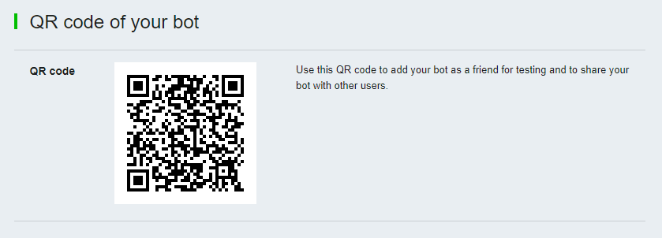
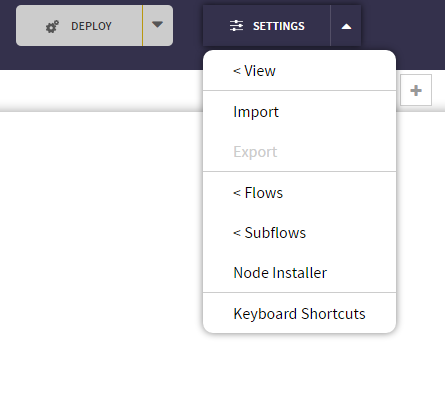

Line Bot Tutorials¶
Table of Contents
In this ChatFlow tutorial, we start by creating a simple echo for Line. We also program a simple text bot for Line using the Google Translation API. In addition, we explain the input and output for the Line In and Line out nodes.
By the end of this tutorial, you will be able to:
- Connect a ChatFlow app to Line.
- Understand the input and output of the Line In and Line Out nodes
A Simple Echo Bot¶
Before we build a Line Translate Bot, let’s create a simple Echo bot to demonstrate how the Line connection works.
1. Create a New Bot and Token in Line¶
- Go to Line Developer Console
{kind=link}
- Create new provider
{kind=link}
- Create new channel
{kind=link}
- You will need channel secret for your ChatFlow application.
{kind=link}
- Issue channel access token. (long lived is strongly recommended)
{kind=link}
Note
Scan QR code with your Line Mobile Application to add your bot to friends.
2. Create a New ChatFlow Application with Line Nodes¶
- Click on “Create new project” and create a new project from scratch.
- Enter a name and press “Create”.

- Your new app should appear in your apps list. Click on the app’s name to enter the Chatflow editor.
- To make your app nice and tidy, you can enable grid in the Settings/view menu.

Drag the Line In and Line Out nodes from the Node Library to your bot’s ChatFlow canvas and then connect them with a wire:
{kind=link}
Note
If the Line In and Line Out nodes are not in your Node Library, click on Settings in the right hand corner. A drop down will open. Click on Node Installer:
In the Node Installer, search for Line. Click on the blue arrow to the right of Line to add the nodes into your palette:

3. Configure The Bot¶
- Double click the Line In Node, select “Add new line-controller…”, and click the “Edit” button.
- Enter your “Line Bot” name under the “Name” field (ex. Echo Bot). Name your “Line Bot Controller” to save it. This will allow that configuration to be used by other nodes.
- Paste the Token and Secret you copied from Line Developer Console into the Token and Secret fields.
- Copy the value of “Webhook URL” field and paste it in Channel Settings of Line Developer Console. Webhooks should be enabled.
- Go back to ChatFLow and click the “Add” button.
- Double click on the Line Out Node and select the “Echo Bot” Token. Click okay.
4. Deploy the Application¶
- Click on deploy button in the upper right hand corner to deploy your application.

After the application is deployed, your bot should be online. It will echo the message you sent to it.
Line Translator Sample Application¶
This section of the tutorial shows you how to create and configure Line Translator sample application
Line Nodes Description¶
This section of the tutorial explains available options for Line Controller, the output of the Line In node and the required formats for the Line Out node input.
Line Controller¶
The Line Controller node organizes connection between Line In/Out Nodes and your Line Channel.
There are several settings for Line Controller Node:
| Option | Description |
|---|---|
Name |
Name you config node to use it in multiple In/Out nodes |
Secret |
Your Line Channel secret |
Acess Token |
Your Line Channel access token |
Webhook URL |
Copy this value and paste in your Line Channel settings |
Autoload Content |
If checked, image, video, audio and File messages are loaded from Line and paylaod is set to its Binary, otherwise payload is set to content url. |
Line In¶
The Line In node receives input from line and outputs the following msg:
1 2 3 4 5 6 7 8 9 10 11 12 13 14 15 | {payload: payload,
line: {
source: event.source,
event: event.type,
replyToken: event.replyToken,
// optional fields:
message: event.message,
type: event.message.type
},
kitt: {
_session_id: message.source.userId,
_user_id: message.source.userId,
_timeout: 120
}
}
|
| Variable | Type | Description |
|---|---|---|
payload |
Various | contains information regarding text, sticker, location, video, audio, image or file messages or follow, unfollow, join, leave, postback or beacon events |
line.message |
Object | Contains original line message for message events |
line.source |
Object | Contains information about who the message is from |
line.event |
String | The type of event |
line.type |
String | The type of message for message events |
line.replyToken |
String | Reply token is used to reply to messages & events |
kitt |
Object | Used by the Router node for session management and timeout |
Note
Message is optional field and will be populated if the line event is message.
Note
Becaons are currently supported only in Japan, Taiwan, and Thailand. Visit Line Site to check if beacons are available for you.
Event filter¶
To have your Line In node receive only specific event types, set Event Type option to any specific type Other events will be ignored by this particular Line In node.
Message filter¶
To have your Line In node receive only specific message types, set Message Type option to any specific message type. Other messages will be ignored by this particular Line In node.
Note
Messages filter is only available when Event Type is set to either “All” or “Message”
You can use several Line In nodes with different filters settings to keep your application clean
Session Key¶
By default msg.kitt._session_id is set to msg.line.source.userId.
To have your Line In node set another session id, select any other Session Key in Line In settings.
Note
Session Key option is used only if chosen key (ex. RoomId) exists in message object.
If msg.line.source.roomId is null or not assigned, msg.kitt._session_id is set to msg.line.source.userId,
which always exists in messages from Line.
Line Out¶
This node receives message by wires and sends to line bot. It expects message with the following properties:
1 2 3 4 5 6 7 | msg = {
payload: payload,
line: {
replyToken: token,
type: type
}
}
|
Note
Type can be set either in line.type or payload.type
Text¶
To have your bot send a text message in Line, format your msg in the following manner:
1 2 3 4 5 6 7 8 9 10 11 12 13 14 15 16 17 18 19 | msg = {
payload: "Hello there",
line: {
replyToken: "reply-token",
type: "text"
}
}
// or
msg = {
payload: {
text: "Hello there",
type: "text"
},
line: {
replyToken: "reply-token",
}
}
|
Note
You can also set line.type (or payload.type) to either “text” or null
Sticker¶
To have your bot send a sticker in Line, format your msg in the following manner:
1 2 3 4 5 6 7 8 9 10 | msg = {
payload: {
packageId: 1,
stickerId: 1
},
line: {
replyToken: "reply-token"
type: "sticker"
}
}
|
Location¶
To have your bot send a location in Line, format your msg in the following manner:
1 2 3 4 5 6 7 8 9 10 11 12 | msg = {
payload: {
title: "Some location",
address: "Some address",
latitude: 1.1111,
longitude: 1.1111
},
line: {
replyToken: "reply-token",
type: "location"
}
}
|
Images¶
To have your bot send an image in Line, format your msg in the following manner:
1 2 3 4 5 6 7 8 9 10 | msg = {
payload: {
originalContentUrl: "https://domain.com/image.png",
previewImageUrl: "https://domain.com/preview.png"
},
line: {
replyToken: "reply-token",
type: "image"
}
}
|
Note
Pay attention that only specific images are supported. Have a look at image requirements at Line Docs
Video¶
To have your bot send a video in Line, format your msg in the following manner:
1 2 3 4 5 6 7 8 9 10 | msg = {
payload: {
originalContentUrl: "https://domain.com/video.mp4",
previewImageUrl: "https://domain.com/preview.png"
},
line: {
replyToken: "reply-token",
type: "video"
}
}
|
Note
Pay attention that only specific video & preview images are supported. Have a look at video requirements at Line Docs
Audio¶
To have your bot send an audio in Line, format your msg in the following manner:
1 2 3 4 5 6 7 8 9 10 | msg = {
payload: {
originalContentUrl: "https://domain.com/audio.m4a",
duration: 60
},
line: {
replyToken: "reply-token",
type: "image"
}
}
|
Note
Pay attention that only specific audio files are supported. Have a look at audio requirements at Line Docs
ImageMap¶
To have your bot send an imagemap in Line, format your msg in the following manner:
1 2 3 4 5 6 7 8 9 10 11 12 13 14 15 16 17 18 19 20 21 22 23 24 25 26 27 28 29 30 31 32 33 | msg = {
payload: {
baseUrl: "https://example.com/bot/images/rm001",
altText: "this is an imagemap",
baseSize: {
height: 1040,
width: 1040
},
actions: [{
type: "uri",
linkUri: "https://example.com/",
area: {
x: 0,
y: 0,
width: 520,
height: 1040
}
}, {
type: "message",
text: "hello",
area: {
x: 520,
y: 0,
width: 520,
height: 1040
}
}]
},
line: {
replyToken: "reply-token",
type: "imagemap"
}
}
|
Note
For more details check Line Docs
Template¶
To have your bot send a template in Line, format your msg in the following manner:
1 2 3 4 5 6 7 8 9 10 11 12 13 14 15 16 17 18 19 20 21 22 23 24 25 26 27 28 | msg = {
payload: {
altText: "this is a buttons template",
template: {
type": "buttons",
thumbnailImageUrl: "https://example.com/bot/images/image.jpg",
title: "Menu",
text: "Please select",
actions: [{
type: "postback",
label: "Buy",
data: "action=buy&itemid=123"
}, {
type: "postback",
label: "Add to cart",
data: "action=add&itemid=123"
}, {
type: "uri",
label: "View detail",
uri: "http://example.com/page/123"
}]
}
},
line: {
replyToken: "reply-token",
type: "template"
}
}
|
Note
For more details check Line Docs
Multiple Messages¶
You can send multiple messages with different types. To do it you need to set message.payload to array of messages. To have your bot send text and sticker at once, format your msg in the following manner:
1 2 3 4 5 6 7 8 9 10 11 12 | msg = {
payload: [{
"Hello there!"
}, {
type: "sticker",
packageId: 1,
stickerId: 1
}],
line: {
replyToken: "reply-token"
}
}
|
Push Message¶
To have your bot send a push message, format your msg in the following manner:
1 2 3 4 5 6 7 | msg = {
payload: "Hello there!",
line: {
to: "user-id"
replyToken: null
}
}
|
Note
Pay attention that line.replyToken shouldn’t be assigned or should be assigned to null (false, undefined)
Note
Push messages are available not for all Line Channels. Check Line Docs for more information
Multicast Message¶
To have your bot send a multicast message (message to multiple users), format your msg in the following manner:
1 2 3 4 5 6 7 | msg = {
payload: "Hello there!",
line: {
to: ["user1-id", "user2-id"]
replyToken: null
}
}
|
Note
Pay attention that line.replyToken shouldn’t be assigned or should be assigned to null (false, undefined)
Note
Read more about multicast messages at Line Docs
Leave Group¶
To have your bot leave group, format yout msg in following manner:
1 2 3 4 5 6 7 | msg = {
payload: "group-id",
line: {
action: "leaveGroup",
type: "action"
}
}
|
Leave Room¶
To have your bot leave room, format yout msg in following manner:
1 2 3 4 5 6 7 | msg = {
payload: "room-id",
line: {
action: "leaveRoom",
type: "action"
}
}
|